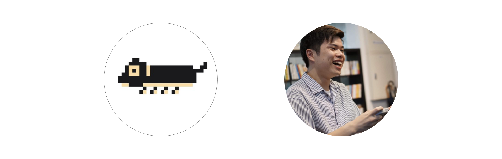

糸長 優磨 (Itonaga Yuma)

NPO法人VineTS理事長・株式会社ジンズ新規事業開発部所属
大分高専電気電子工学科を卒業したのち、横浜国立大学電子情報学科に編入学、2020年3月卒業。
Resume
- 株式会社ジンズ エンジニア
Apr 2020 - present
デジタル化をするため、お店に行かなくてもメガネが買えるUX体験を作っています。
- 株式会社Think Lab エンジニア
Apr 2020 - present
マーケティングからweb開発・App開発まであらゆるデジタル分野を管理しています。
- Pathfinder Inc. Tech Lead
Mar 2020 - present
Maasサービスの開発を行っています。
- Saigate 株式会社 Web Developer
Mar 2020 - present
データ分析プラットフォームの開発を行っています。
- ユカイ工学 インターン
Apr 2019
Codamaを用いたプロトタイプの作成を行いました。
- 株式会社ウィズパッション アルバイト
May 2018 - Feb 2019
バックエンドの開発からslackAPIなどを用いた自動化、インターネット広告のデータ分析をしていました。
- 株式会社LASSIC インターン
Aug 2018
地元の人と地方移住者を繋ぐサービスのプロトタイプ作成をしました。
Activity
- NPO法人VineTS 理事長 Site
Nov 2019 - present
- ISL メンバー Site
May 2018 - Mar 2020
- 学生団体ZENPEN 代表 Site
Aug 2018 - Sep 2019
Academia
- 横浜国立大学電子情報学科
Apr 2018 - present
河野研究室所属
- 大分高専電気電子工学科
Apr 2013 - Mar 2018
木本研究室 陰影画像から三次元物体を推定する研究をしていました。
Organizer
- 第1回北海道ZENPEN編入説明会(オンライン配信管理係)
ZENPEN / Mar 1,2020
- 奨学金で広がる未来と考えること
VineTS / Feb 22,2020
- 夢を語ろうLT会
VineTS / Jan 5,2020
- 第8回関東編入説明会
ZENPEN / Sep 24,2019
- 第7回関東編入説明会
ZENPEN / Mar 16,2019
- 第5回関西編入説明会
ZENPEN / Mar 13,2019
- 第2回関東合同企業説明会
ZENPEN / Mar 8,2019
- 高専新年会
ZENPEN / Jan 26,2019
- K-SAMIT2018~全国高専同窓会~
ZENPEN / Sep 29,2018
- 全国合同オンライン編入説明会
ZENPEN / Aug 9 Aug 11,2018
Languages
- C / C++ / C# / PHP / JavaScript / CSS / HTML / python / Processing
Interests
Projects